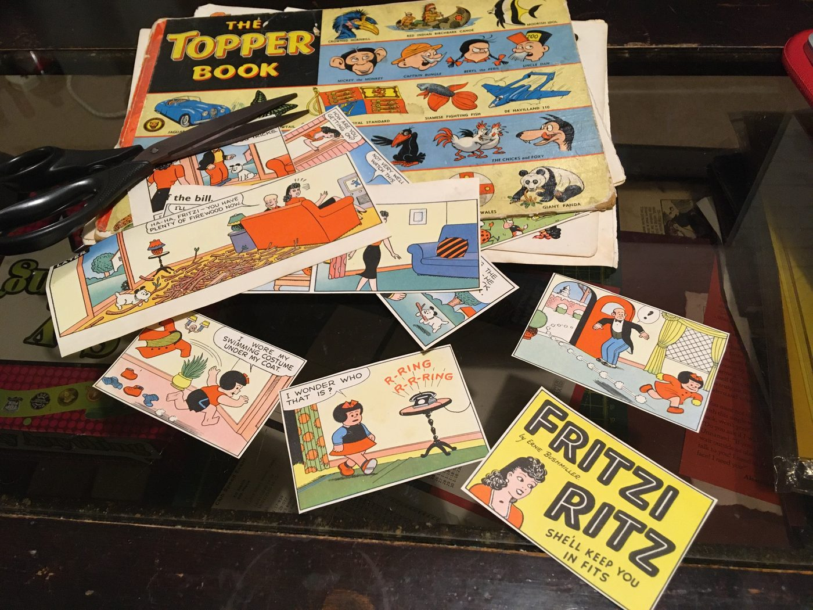
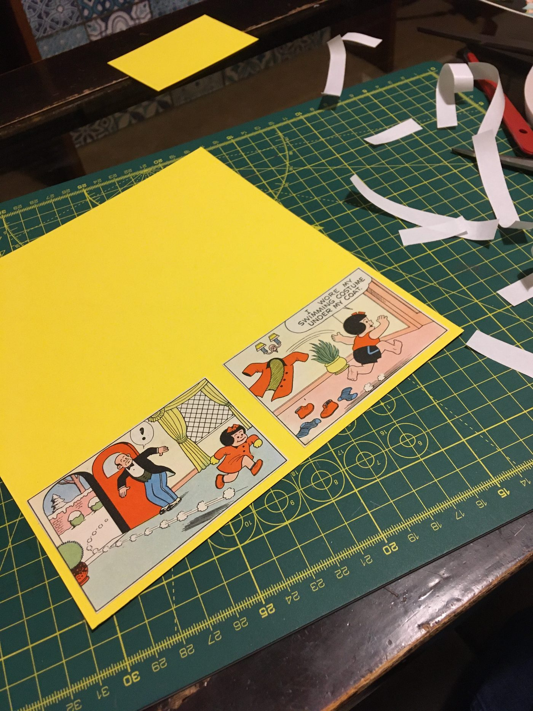
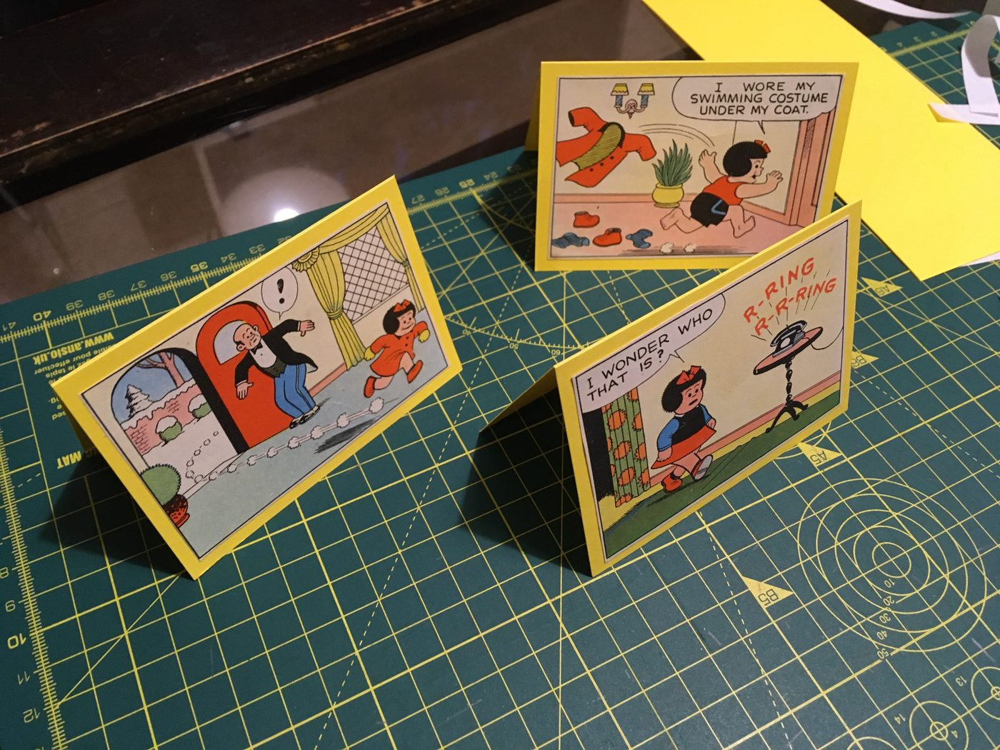
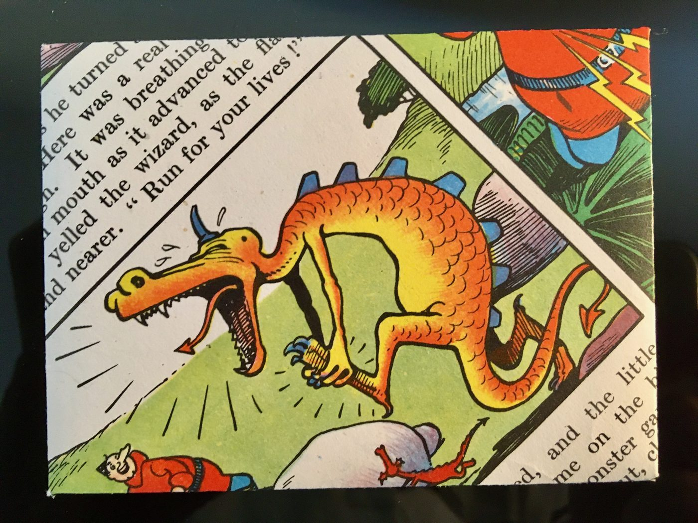
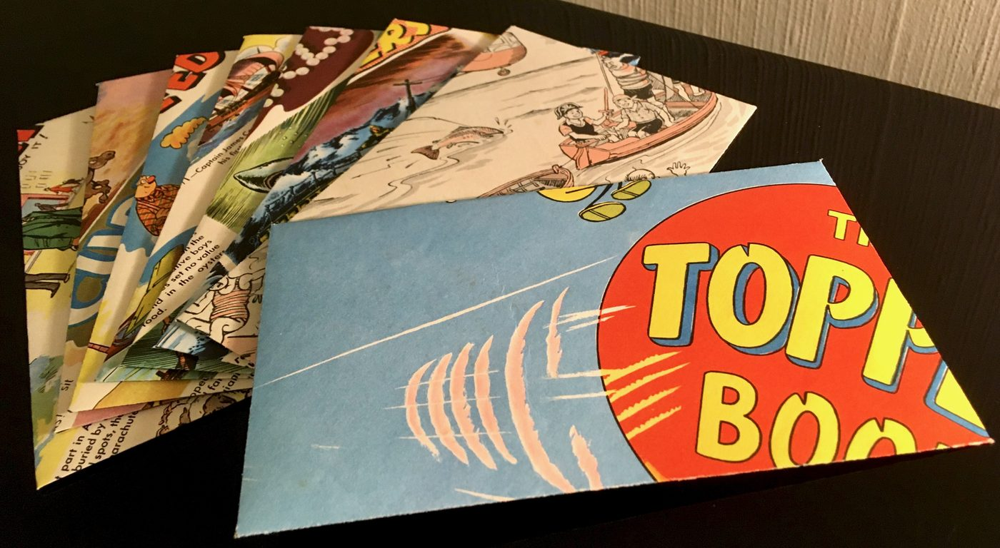

A second life for old stories
Classic Comic Art began with well-loved annuals that were too damaged to keep as books, but far too characterful to throw away. Inside each one were hundreds of tiny scenes still waiting to be noticed.
I select individual panels, find the visual joke or moment hiding inside them, and compose each piece by hand. The result might become a one-of-a-kind greeting card, a matching envelope, or a small piece of wall art.
The process
From battered annual to finished card
-

01Find the material
Start with an incomplete or damaged annual whose pages still deserve an audience.
-

02Choose the moment
Isolate a character, expression or tiny narrative, then compose it for a new setting.
-

03Make it by hand
Cut, mount and finish each piece individually. No two cards can ever be quite the same.
“Beautiful vintage card… It has been framed now, and will be kept.”
— Etsy customer review

One of one
The detail is the point
The pleasure is in finding exactly the right fragment: a beautifully drawn character, an accidental punchline, or a scene that means something new outside its original page.
Even the envelopes can continue the story, folded by hand from complementary comic pages.

See what has been rescued.
The shop is stocked periodically. Visit Etsy to see current availability, previous pieces and customer feedback.
Explore Classic Comic Art